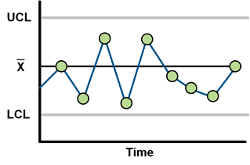
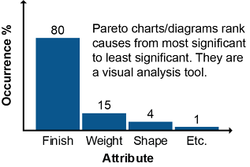
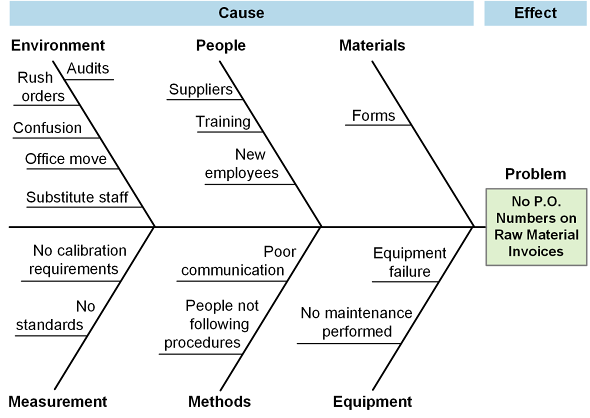
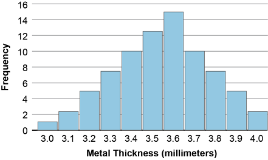
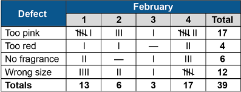
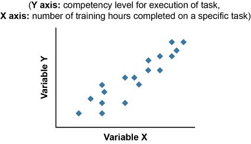
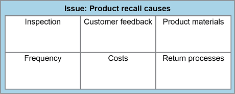

Here we address regulatory and documentation details related to importing or exporting goods and services, including an overview that addresses the role of customs in both importing and exporting. This is followed by discussions of Incoterms® trade terms, export-import intermediaries, export packaging, and export and import documentation.
Customs refers to a country's regulation of import and export trade at its international ports and borders. The purposes of customs are to ensure border security, to collect all required tariffs, and to enforce trade restrictions. A tariff, according to the ASCM Supply Chain Dictionary, is "an official schedule of taxes and fees imposed by a country on imports or exports."
📖 ASCM Definition — global trade management:
Global supply chains need to operate efficiently as goods and services move between countries. This includes making wise import and export decisions, including how to arrange contracts for carriage so all parties clearly understand their roles and where risk of loss transfers between parties, how to facilitate clearing customs between countries, how to package goods for export, and how to satisfy all related export and import documentation requirements. Let's start with an overview of these subjects.
International contracts for carriage (contracts for transport and materials handling, as opposed to contracts for sale and transfer of title) often rely on Incoterms® trade terms, which are simply agreed-upon international standards for the language to use in certain portions of such contracts. While these terms are voluntary, the contracts create an obligation.
Facilitating customs clearance is often done through the use of intermediaries, such as freight forwarders or export management companies. Since complex international transactions often have many of these intermediaries, it is important to understand how the various roles interact with each other and what value each should provide.
Export packaging needs to meet a number of objectives. The primary objective of industrial packaging (as opposed to consumer packaging) is protecting the goods from damage in a way appropriate to the chosen mode. Other objectives include minimizing the use of unsustainable materials or the overall use of materials.
Imports and exports require a significant amount of documentation. It is important to understand what documents will be required and what information the organization will need to collect and report. In general, exports require certain proofs such as proof of sourcing origin while imports require proper classification for assessment of tariffs. The Harmonized Tariff Schedule is used to assign a numeric code to the shipment so the correct tariffs can be assigned. Goods also need to have their value declared.
Since customs regulations are driving much of the complexity in international shipping, let's get an idea of why these regulations exist and learn about some best practices to follow in navigating customs. We will look at some import regulations and restrictions at a high level after that.
The purposes of each country's customs regulations are twofold: to provide revenue and to protect domestic industries. Imported goods, therefore, can be seen as a source of national revenue, as a threat, or—ambivalently—as both. This built-in conflict of interest makes the job of importing (or exporting) into a country difficult and sometimes expensive.
Aside from assessing import duties, customs also inspects shipments with the following intentions:
To ensure that the invoice is correct and that the shipment contains the number of items claimed in the documentation
To discourage dumping of products by imposing a high-percentage duty (Dumping is when a company exports a product at a price lower than it normally sells for in the country where the company operates. There is a link for additional anti-dumping information online in the Resource Center.)
Clearing customs can be routine, or it can be a serious obstacle to delivering cargo on time. To expedite a successful clearance of customs, both importer and exporter should either do thorough research on the importing country's import regulations or hire competent intermediaries to guide them. Customs regulations are a moving target, subject to change whenever new threats arise (or are perceived to arise); hiring a specialist who keeps an eye on that target improves a company's chance of getting the job done right on the first try. Intermediaries such as freight forwarders, export management companies (EMCs), and export packagers can help with the preparations. Because clearing customs successfully is so important, most companies—even the largest ones—rely upon experienced customs house brokers.
Here are a few general considerations to keep in mind when formulating a strategy for getting your cargo through customs unimpeded:
Use a customs house broker with proven expertise. Only a licensed broker can transact business with customs, which means that importers must use a broker to submit documents to customs to release their goods. Importers are responsible for providing the necessary documents and information to the broker according to customs time lines and regulations and arranging for the payment of duties found due. (A broker can pay on the importer's behalf.) A licensed broker must have a power of attorney from the importer to act as its agent unless it is an in-house broker.
Have the customs house broker begin the process before the shipment arrives at the port or air terminal, if possible.
Use electronic documentation rather than hard-copy printouts whenever possible.
Make sure your counterparty in the trade (or its intermediaries) has done its research.
Check the backgrounds of your intermediaries carefully. Long-term relationships with trusted consultants are the most productive. The importer of record, or the company that caused the importation of goods, is responsible in the end. Inexperienced forwarders have been known to guess at the proper code for items, causing problems for the importer trying to pick up its goods at customs.
Governments generally look with less favor on importing than on exporting, since exports bring money into the country and imports take money out. Moreover, goods coming into the country may pose various threats, including such hazards as competition with domestic goods; potential contamination of the environment; infectious diseases affecting livestock, wildlife, or humans; and terrorism.
Governments around the world create numerous import licensing requirements, regulations, and restrictions to guard against these dangers, and they enforce these regulations through customs inspections. These restrictions pose problems for importers and exporters alike. The problems for importers are obvious enough. In the United States, for example, there might be a market for European cheeses produced from nonpasteurized milk, but the Department of Agriculture won't license a distributor to sell such cheeses in the U.S. market—ostensibly for health reasons. Japan protects its domestic rice growers from imported rice for cultural reasons. On the other side of such restrictions, exporters may be easily able to acquire an export license from their own government but not able to get an import license to enable foreigners to buy their products.
The World Trade Organization, which includes in its membership the vast majority of trading nations, takes as part of its mission the creation of free and fair trade around the world by eliminating many of these barriers against imports. It pays special attention to providing less-developed nations with better access to world markets for their exportable products.
Membership in the WTO also means that businesses headquartered in one member nation should be able to open branches in another member nation and be subject to the same rules applying to domestic businesses in that nation, thus gaining access to their markets directly rather than through imports. After China joined the WTO in 2001, for example, many foreign companies rushed in, hoping to capture a slice of the potentially enormous market there. These early efforts were sometimes disappointing for a variety of reasons.
Even when trade and investment barriers begin to fall, the export-import business may still be stymied by problems with entrenched bureaucracy, lack of infrastructure, and simple lack of buying power.
📖 ASCM Definition — terms of trade:
Incoterms® is short for International Commercial Terms; they were created to simplify international transactions. As defined in the ASCM Supply Chain Dictionary, they are
a series of pre-defined commercial terms published by the International Chamber of Commerce relating to international commercial law. These terms do not cover property rights.
Incoterms® trade terms indicate the fundamental roles and responsibilities of the seller and the buyer. This includes the point of delivery and distribution of cost of risk among the parties. These trade terms are designed for import or export but can also be used domestically as the basis for contract details. While Incoterms® trade terms do specify obligations and transfer of risk, responsibility, and cost, they do not specifically regulate the transfer of title and are silent on this issue. Transfer of title should be specified instead in the purchase order; however, Incoterms® trade terms do specify the point of delivery, which is used as an input to determine when title is transferred per revenue recognition rules in accounting (using IFRS or U.S. GAAP).
Although Incoterms® trade terms are not legally binding, sellers and buyers around the world accept them as the standard terms to use in contracts of sale. Incoterms® trade terms are frequently included on shipping company websites.
The key things to know about use of Incoterms® trade terms is to know enough about these terms to select the most appropriate rule, to clearly specify the correct port or other named place, and to ensure that these details are correctly recorded in the contract for carriage, the letter of credit or other financial instrument, and the invoice. The seller's goal is to increase sales after all, so most sellers tend to promote a particular Incoterm® that they feel competent to uphold and is customer friendly rather than making this a case-by-case choice. They will use a different term if the buyer wants to perform additional functions. Some sellers will quote several viable options along with the cost of each to the buyer.
The seller's goal is to increase sales after all, so most sellers tend to promote a particular Incoterm® that they feel competent to uphold and is customer friendly...
The International Chamber of Commerce (ICC) recommends using their most recent version, Incoterms® 2020, although parties to a contract for the sale of goods can agree to choose older versions. It is important, however, to clearly specify the chosen version—Incoterms® 2020, Incoterms® 2010, or any earlier version, along with the specific trade term being used and a location. Depending on the point of responsibility transfer, the location is either an origin shipping port, a port of call for pickup, or a plant location for local pickup or delivery. For example, CIF Los Angeles, U.S.A., Incoterms® 2020 would show that cost, insurance, and freight are paid by the seller when exporting to the Port of Los Angeles.
General changes in the 2020 version include a clarification that an owned fleet might be used instead of a third party. Who pays for what is now more obvious, in a clear table format, for all of the terms. Also, security requirement costs are now clearly allocated in the rules.
It's absolutely critical that responsibilities are assigned to both parties and that there is agreement on the terms of the transaction.
Incoterms® trade terms are organized into two groups:
A complete list of Incoterms® 2020, organized into these two groups, and a definition of each term appear in Exhibit 5-23. Note that for all terms except EXW, the seller is required to clear the goods for export. For more detailed information or to order a copy of the terms, visit the ICC website.

Various points of delivery are illustrated in Exhibit 5-24.

Sometimes shippers accidentally use FOB to refer to an air shipment, but, if used properly, it indicates shipments transported via sea and inland waterway.
What is Covered Under Various Institute Cargo Clauses (ICC)
Institute cargo clauses (ICC) can be specified as coverage A, B, or C, either specifically as part of an Incoterm® or as an additional stipulation. Exhibit 5-25 shows what is and is not covered under each coverage level.

© 2024 Mutatis Mutandis. Used with permission.
Be careful to not confuse Incoterms® trade terms with other acronyms that happen to be similar. A common area of confusion is between U.S. domestic terms of trade and the Incoterm®trade term FOB. The U.S. terms FOB Origin (sometimes FOB Factory) and FOB Destination are to be used only for domestic U.S. shipments by various transportation modes, while the Incoterm® trade term FOB applies only to sea and inland waterway transport. Other U.S. domestic terms often used incorrectly for international purposes are Freight Pre-Paid and Freight Collect.
International commerce takes place between an exporter (the seller) and an importer (the buyer or customer). A number of intermediaries may perform one or more specialized services before the items sold in one country arrive at the customer's dock in another. Elsewhere we cover the growing use of logistics specialists to carry out specific operations for a client company (3PLs) or to coordinate the entire logistics function (4PLs). The use of specialized logistics intermediaries is even more common in the export-import business than in domestic supply chains. There are simply many more issues to contemplate when you send a product across borders into countries with different rules, a different currency, and a different language. And so it may be cost-effective for a company sending or receiving an international shipment to pay considerable fees or commissions for these services.
We'll explore the roles of several types of intermediaries who assist in getting cargo across borders and through customs: freight forwarders, non-vessel operating common carriers, consolidators, customs house brokers, export management and export trading companies, shipping associations, ship brokers and ship agents, and export packing companies. After that there are flowcharts showing how the parties may interact and a summary of the types.
📖 ASCM Definition — freight forwarder:
📖 ASCM Definition — foreign freight forwarder:
Foreign freight forwarders are not themselves carriers, nor do they buy and resell space on carriers. They are, instead, independent agents. In the United States, for example, they are regulated by the Federal Maritime Commission.
A great majority of international shippers use forwarders.
A great majority of international shippers use forwarders. Small companies use them because they can't afford to maintain a staff with the expertise required to handle foreign shipping and because one of the forwarder's functions is to consolidate smaller shipments into larger ones that qualify for discounts. But even large companies use forwarders, because they can benefit from the expertise of such specialists.
Forwarders may perform many different functions in the course of moving goods across international borders, including
Arranging inland transportation.
Although forwarders in the United States must be licensed by the government, they are not subject to certification requirements. However, certification is available for ocean forwarders from the U.S. National Customs Brokers and Forwarders Association, which will designate someone as a "Certified Ocean Forwarder" based upon a combination of experience and passing a certification exam.
Airfreight forwarders may be either independent contractors or affiliated with a single air carrier. They require neither licensing nor certification. However, they may obtain certification from the relevant country's regulatory body. In the U.S., this is the U.S. Federal Aviation Administration (FAA). In that jurisdiction, clients generally prefer to work only with FAA-certified airfreight forwarders. A major source of competition for airfreight forwarders comes from the carriers themselves, who can work directly with shippers. Companies like FedEx and UPS Air also compete with forwarders for small shipments.
Forwarders derive income from a combination of fees, markups, and commissions from carriers.
The non-vessel operating common carrier (NVOCC) buys space on inland carriers and resells it to shippers at a marked-up price. NVOCCs handle only the part of the shipment traveling from a port to the importer's dock or from an exporter's dock to a port.
NVOCCs originated in the United States in the 1970s as a cost-effective alternative to the carriers. At the time, trains and trucks often returned to port empty after unloading cargo at inland destinations and charged the shipper for both halves of the round trip—even though the shipper made no money on the turnaround. The NVOCCs were able to solve the problem by finding cargo for the return trips to port.
Using their own containers for the inland journey, NVOCCs scout around for port-bound shipments to consolidate into those same containers for the trip back to port. They also provide container service for trips to and from foreign ports. Both shippers and carriers benefit from the intermediary work of the NVOCCs. The shippers receive reduced rates; the carriers gain access to a wider market.
NVOCCs can be distinguished from forwarders in three ways:
A freight forwarder could perform those inland functions for the NVOCC, and this could very well be a division of the freight line or their contractor. The NVOCC can arrange for transport, but these are common carriers that do not operate the vessels by which the ocean transportation is provided and are considered shippers in their relationship with an ocean common carrier.
Some NVOCCs are affiliated with freight forwarders; some are independent and are therefore able to work with a variety of forwarders. The independent NVOCCs can offer lower rates than those affiliated with a forwarder, but the affiliated NVOCC and forwarder can offer door-to-door service.
Though they neither own nor operate vessels, NVOCCs are regulated in the U.S. by the Federal Maritime Commission, which requires them to publish rates and not discriminate in hiring. However, they are also subject to different regulations from carriers, and this may put them at a disadvantage. Under the Ocean Shipping and Reform Act (OSRA) of 1998, for instance, NVOCCs are forbidden to enter into service agreements with shippers, while carriers are allowed to do so.
The consolidator combines small shipments into larger ones to qualify for full-vehicle discounts. Generally this service is provided to fill containers for intermodal shipment, such as turnarounds carrying cargo between an inland warehouse and a port.
Consolidators are distinct from NVOCCs, but they may work under them. A consolidator that is not affiliated with an NVOCC contracts with a forwarder or a carrier to arrange the transportation.
Customs house brokers assist importers by moving shipments through customs. Their job is to ensure that all documentation required to pass customs is complete and accurate.
These days, the information required to clear customs is electronic and paperless, such as the Automated Broker Interface System in the United States and the Pre-Arrival Review System in Canada. Replacing paperwork with electronic data transfer has sped up the process of getting cargo through customs.
The customs house broker pays all import duties under a power of attorney from the importer. Liability for any unpaid duties lies with the importer, not the broker.
When companies want to expand from domestic to foreign markets, they may turn for assistance to foreign trade specialists in either export management companies (EMCs) or export trading companies (ETCs) rather than adding internal expertise. While there may be some overlap in the types of services offered by EMCs and ETCs, there is a distinct line between their approaches. The EMC is generally not an exporter itself but rather a consultant to the exporters that hire it. The ETC, on the other hand, is itself an exporter.
A common reason to hire an EMC is to acquire representation in a particular market where the EMC has special knowledge and connections. By working with an EMC, the exporter gains access to current information about the preferences of consumers in that market and about local customs and government regulations. Knowledge of local conditions enables an EMC to help the exporter avoid offending consumers or officials by inadvertent misinterpretations of the culture or the politics of the importer's country. Finally, EMCs often cultivate friendly relationships with host governments, and this can help ease the exporter's goods through customs. EMCs may also buy the exporter's goods and resell them in the foreign market (in the manner of an ETC), but generally they act as a company's long-term consulting partner, not as a buyer of its products.
An ETC, by contrast, looks for companies making goods that it wants to buy and resell in a foreign market. Its functions, therefore, may include locating importers to buy the goods, overseeing export arrangements, preparing and presenting documentation, arranging transportation overseas and inland, and complying with regulations.
More expansively structured ETCs are known as general trading companies. These entities may comprise banks, steamship lines, warehouses, insurance services, a communications network, and a sales force. Japan's success in international trade has been facilitated by such general trading companies, known in Japan as "sogo shosha." These enormous conglomerates are some of the world's highest revenue generators, including familiar names such as Mitsui and Mitsubishi. With offices in over 100 countries, the sogo shosha handle more than three-fifths of Japan's imports and over one-third of its exports. Other countries with very large general trading companies include Germany, South Korea, China, and the Netherlands.
Before deregulation, ocean liners were required to publish their rates. Smaller shippers, seeing the rate schedules, could ask for similar deals. Since deregulation, carriers and the larger shippers have been able to sign confidential rate agreements. In response, smaller shippers have formed shipping associations—usually nonprofit organizations—to negotiate with carriers for rate discounts on the same terms as larger shipping companies.
Ship brokers and ship agents assist exporters with the details of arranging ocean transport. A ship broker is an independent contractor that brings exporters together with ship operators that have appropriate vessels available to carry the shipper's freight. With detailed knowledge of carrier schedules, the broker can help the exporter find a ship that will be in port when its cargo is ready to travel. A ship agent works for the carrier rather than being an independent contractor. When a ship is headed for port, the ship agent arranges for its arrival, berthing, and clearance; while the ship is in port, the agent coordinates unloading, loading, and fee payment. Shippers contact ship agents for information about the arrival and availability of ships.
Export packing companies provide the specialized packaging services required for cargo that may have to undergo long journeys and pass customs inspections in another country. The packing company can choose packaging materials that provide adequate protection with the least bulk and weight.
Exhibit 5-26 illustrates two paths that cargo might travel to get from an exporter to an importer—(a) the simplest possible journey and (b) a journey aided by a full complement of intermediaries.

In sum, the participants in export-import trade have the features and advantages described in Exhibit 5-27.

Industrial packing and proper labeling for export present special problems and may be handled by an export packaging company. Packaging for delivery to a foreign buyer requires consideration of issues such as the following.
International cargo needs to be packaged with materials and techniques chosen to protect the cargo from damage caused by rough handling, rough seas, extremes of temperature, and other hazards of long international journeys. The choice of mode has a large impact on the type of packaging that will be needed. For example, air requires and demands very little packaging due to the gentle ride and need to maximize the amount of cargo. On the other hand, ocean shipping requires significant industrial packaging, for example, internal braces built around the cargo in a container to keep the load from shifting. Export packaging companies are familiar with what materials are available and which are most suited to the destination, type of cargo, and mode of transportation
Perishable shipments include (but are not limited to) foodstuffs, floral products, plants, animals, and medical and chemical products. Due to their nature, perishables deteriorate over time or if exposed to harsh environmental conditions, such as excessive temperature or humidity and other forms of improper care and handling.
Numerous domestic and international safety regulations and packaging standards are in place to ensure that perishable shipments are properly insulated and cushioned and to prevent leakage, spillage, and contamination from other cargo during transit. Temperature extremes and transit times are also monitored. Live plants and animals need additional considerations.
Customs will need to be able to access the cargo, and industrial packaging needs to accommodate this possibility. Also, for some countries, customs duties are based in part on the weight of the cargo (package included) and on the country of origin. For certain other countries, customs duties are based on weight only. In either case, this means that packaging needs to be as lightweight as possible while still protecting the cargo. Export packagers should be familiar with the customs requirements of each country.
Packaging using lighter materials or fewer materials can provide multiple benefits simultaneously. Not only can it reduce customs costs and save money on non-value-added items for increased profitability; it can also help an organization meet its sustainability goals. For example, Walmart used its leverage to get its suppliers to reduce their total amounts of packaging significantly. It developed an online scorecard to help suppliers meet these goals. When it extended these goals to Asia, it significantly reduced its environmental impact.
Packaging for reverse logistics can include reusable packaging or packaging that is designed to be biodegradable so it can be disposed of responsibly.
Packaging can enable sustainability and reverse logistics in the following ways:
When the shipment arrives at the buyer's port, customs will inspect the items to be sure that they contain all necessary markings, including safety labels, instructions, country of origin, and any special marks required. Experienced packagers who are familiar with regulations in the importer's country can help ease shipments through the customs inspection by getting the labeling right.
Consolidators, export packagers, freight forwarders, and NVOCCs all should be able to deal with the problem of empty turnaround trips in the importer's home country, either directly or by contracting with a knowledgeable specialist. Packaging needs to be chosen with an eye to the available transportation in the destination country and the potential packaging needs of exporters whose shipments can be consolidated for the backhaul trip to the port or terminal. Generally this means using containers.
Export requires considerably more extensive documentation than domestic transactions. Using the U.S. as an example, an overview of the major export document types follows.
The U.S. Census Bureau uses the Automated Export System (called AESDirect) to capture and store U.S. export data electronically. AESDirect is provided free of charge to allow exporters to self-file their Electronic Export Information (EEI), previously known as the Shipper's Export Declaration (SED). The EEI must be filed for exports valued at US$2,500 or more when shipped to any country except Canada. (Shipments to Canada are exempt from the AES regulation.) Paper copies of the EEI are no longer accepted. In most cases, the broker will file the EEI instead of an individual person working in the supply chain. Related links about the AES program and AESDirect are available online in the Resource Center.
The U.S. form includes such basic information as
A description of the commodity
The shipping weight (with packaging)
A list of marks and numbers on the containers
The number and dates of any required export license
The place and country of destination
The parties to the transaction.
Although some commodities are forbidden for export or limited in some way, the form exists as much for the purpose of compiling trade statistics as for enforcement.
Shippers need to acquire an export license. The licenses come in two types:
The commercial invoice states the value of the goods in the shipment and specifies payment terms and methods. It constitutes the seller's and buyer's invoice for the transaction. It also may be required for the letter of credit and by other entities that need to know the value of the goods for insurance or the assessment of duties. The information required and the language it's written in may vary from country to country.
A consular invoice, required by many countries for incoming shipments, is similar to the commercial invoice but also contains information needed for customs in the importer's country. Generally the consular invoice must be written in the language of the importing country, where it will be used for compiling trade statistics.
A pro forma commercial invoice is basically a quoted invoice (not yet official) that may be sent to a potential buyer in advance of the actual sale. It may contain the same information as a regular commercial invoice and serve as both a price quote and documentation for the potential buyer to use in securing a letter of credit to finance the purchase. Carefully documenting all costs in the pro forma invoice can help the exporter properly price the product by accounting for hidden costs.
Containers traveling under an ATA Carnet can cross several boundaries duty- and tax-free without customs inspection. (ATA stands for "Admission Temporaire/Temporary Admission.") The Carnet convention was adopted for western Europe in 1961 and was intended to apply to commercial samples, professional equipment, and items for presentation at tradeshows and other similar events that were merely passing through a jurisdiction, not being imported into it. Despite their original use for these specific purposes and items, Carnets now cover almost any type of goods, excluding disposable and consumable items, and they are used worldwide.
A certificate of origin provides information on the country where the goods were produced (country of origin) for assigning tariffs and for compliance with government trade restrictions. It often accompanies cargo exported into a country that has signed a treaty granting favorable import duty rates to the exporting country. The certificate states that the goods actually did originate in the exporting country and are not merely being reshipped from there to benefit from the lower duty. There is more discussion on the complexities of the origin of goods elsewhere.
A shipping company issues a bill of lading (B/L) with the buyer as a way of demonstrating ownership of goods. All international shipments are initiated by a B/L that serves as the carrier's contract and receipt for goods the carrier will transport from one destination and shipper to another specified destination and recipient. The B/L also serves to document claims if the shipment is delayed, damaged, or lost.
An international shipment may be covered by multiple B/Ls, each initiating a new leg of the journey. An export B/L applies to the carriage from the exporter's dock to its country's port, while an ocean B/L governs the port-to-port portion of the shipment. A combined transportation document groups the B/Ls from various modes into one document.
Order bills of lading provide evidence of ownership and are negotiable. Sellers may use them to transfer title to an intermediary, bank, or importer. A straight bill of lading, by contrast, is nonnegotiable and governs cargo that must be delivered straight to the consignee. A clean bill of lading, issued by the carrier, certifies that the goods have arrived at the ship undamaged. If the goods appear to have been damaged, the carrier will note that on the original B/L and will not issue a clean bill.
The ship's manifest, based on processed B/Ls, summarizes the vessel's cargo, noting the port where the cargo came aboard and the port to which it's bound.
A statement of liabilities appears in the primary B/L. According to the U.S. Carriage of Goods by Sea Act (1936), the shipper bears responsibility for losses that result from perils of the sea, acts of God, acts of public enemies (such as pirates or terrorists), or its own negligence. The carrier is responsible for maintaining the ship in good working order—literally, "ship-shape"—and is liable for its own acts of negligence. (Ocean carriers have fewer legal responsibilities than overland carriers.)
Use of a uniform document has reduced processing costs for air shipping and facilitated faster clearing through customs.
The air waybill (AWB), or airway bill of lading, is a standardized form used for all air shipments. Use of a uniform document has reduced processing costs for air shipping and facilitated faster clearing through customs. Unlike a steamship B/L (and except for a straight B/L), the air waybill doesn't provide title to the cargo. Instead, it serves only as a receipt for goods and as evidence of the contract of carriage. The cargo is delivered straight to the consignee named in the letter of credit financing the transaction—which may be either the importer or the bank issuing the letter of credit. If the goods are not designated for delivery to the bank, the importer can simply show up at the carrier's destination and claim the cargo. Therefore, unless there has been a cash payment to the exporter (or the importer is known and trusted at the destination), the AWB arrangement involves some risk. Some destinations provide for cash on delivery, with consignment contingent upon receipt of the payment from the importer. The exporter often engages a freight forwarder or consolidator to handle the shipment and provides a Shipper's Letter of Instructions authorizing the forwarding agent to sign the AWB on its behalf.
Exhibit 5-28 shows an air waybill.

A dock receipt, issued by a ship agent, signifies that a steamship company has received cargo from a domestic carrier.
If the terms of sale require insurance, a certificate of insurance will attest that either the buyer or the seller (according to the relevant Incoterms® trade terms) has taken out a policy covering the cargo. The certificate indicates types of insured losses, the amount of insurance, who issued it, and so on.
The Customs Convention on the International Transport of Goods under Cover of TIR Carnets (TIR Convention) is a 1975 United Nations treaty that established a common customs document called a TIR Carnet and established other trade-facilitating agreements, such as a mutual recognition of customs controls among participating countries. TIR stands for "transport international routier" (international road transport). As of 2021, the TIR Convention has 77 contracting parties, one of which is the European Union. There are over 30,000 authorized operators (trusted carriers) and 3,500 customs offices in the system. In May 2021, the fully digitalized eTIR system came online.
The TIR Carnet enables sealed road transport trailers and containers to avoid customs inspections until they reach their destination country. (However, customs can still claim the right to conduct an inspection.) In the case of the European Union, the TIR Carnet is used only when the shipment originates or ends outside of EU customs territory or if the transit will involve movement temporarily out of and back into EU customs territory. Because the United Kingdom has exited from the European Union, it now needs to use TIR Carnets for European Union trade.
The Convention on the Contract for the International Carriage of Goods by Road (CMR Convention) is a 1956 United Nations treaty that has been ratified by 58 parties, including most of Europe and almost all of the European Union. Its main instrument is a CMR waybill or consignment note. This is a standardized waybill provided in electronic form since 2017 as an eCMR waybill. Otherwise it is prepared in triplicate. It is prepared in three languages for ease of use in Europe or elsewhere. This waybill helps regulate carrier liability and requires standardized information about the shipment, origin, and destination, including information about dangerous goods. It also requires carriers to provide prompt notification of damages.
📖 ASCM Definition — ATR certificate:
Most countries are eager to promote the international sale of domestic manufactures and agricultural products. However, getting the goods into the buyer's domain can often be a struggle. The consignee's country has to worry about the balance of trade, contaminants, invasive species, and collecting the full amount of import duties. The customs office is the focal point of the importing country's concerns.
In this section on the documentation concerns of importers, we'll look at
It's imperative that all parties, including customs, know exactly what is being shipped. The Harmonized Tariff Schedule (HTS), which is administered by the World Customs Organization in Brussels, serves as a set of standard numerical descriptions of products exchanged in export-import transactions.
📖 ASCM Definition — Harmonized Tariff Schedule (HTS):
📖 ASCM Definition — term:
The HTS coding system is used by more than 200 countries and economies as a basis for their customs tariffs and for the collection of international trade statistics. Over 98 percent of the merchandise in international trade is classified in terms of the HTS. It is important to note that while HTS codes are required for businesses selling merchandise internationally, they are not currently required for individuals (for example, selling from a website like eBay and shipping internationally). If you do not provide a code while shipping an item, the broker will typically assign an HTS code.
The basic HTS number is made up of six digits. Each country can assign up to four additional numbers, to make a 10-digit code. The United States, for example, maintains two versions of the harmonized code, both expanded to 10 digits. One is used for imports and is administered by the U.S. International Trade Commission (USITC); the other, called Schedule B, is used to classify exports and is administered by the Census Bureau. Many other countries use six- to nine-digit versions of the HTS number. For instance, Japan uses 39 codes to classify its salmon products. As you see in the excerpt of codes in Exhibit 5-29, Japan has used nine-digit codes to classify its live, fresh, chilled, and frozen salmon products.

Once the exporter has determined the identity of the cargo by reference to the harmonized code, the importer is responsible for declaring the value of the cargo. That value, along with other factors, influences the amount of any import duty. According to the World Trade Organization (WTO), the declared value of the cargo should ideally be the actual price paid (or to be paid) by the importer. Goods shipped between one company's divisions located in different countries are valued by a transfer price, which is a standard cost plus a surcharge. The WTO recognizes other reasonable ways of determining value, such as the value of identical or similar merchandise.
Duty drawback is a refund of all or part of duty paid on goods that were first imported and then reexported. Governments differ on the details of drawbacks. In every case, however, the importer pays the import duty when the goods initially come into the country and then applies for the drawback after reexporting. The duty will be based on the increase in value based on a component or module, not on the increase in value due to transformation.
The assessment of costs due at customs varies from country to country. In addition to the import duty or tariff (the words "duty" and "tariff" are interchangeable), there will be customs-related fees and, in some countries, a value-added tax (VAT). Note that Canada has a VAT equivalent called a goods and services tax (GST) and that the provincial tax plus the federal GST is called a harmonized sales tax (HST).
Import duties are sometimes assessed as a percentage of either the Incoterms® CIF (Cost, Insurance, Freight) or FOB (free on board) value. (Note that there is also a UCC F.O.B. term used just in North America but this is not what is being discussed here.) The FOB value includes the cost of goods plus the amounts paid by the exporter to transport the freight from its dock and load it on the ship. If the cargo consisted of goods subject to a 5 percent tariff and the CIF were 1 million euro, then the tariff (duty) would be 50,000 euro. Import duties are country specific, however. For example, in the U.S., according to the U.S. Customs and Border Protection site, import duties are based on the total purchased value paid in the foreign country and are not dependent on weight, size, or quality. They rely on the Harmonized Tariff Schedule of the United States Annotated (HTSUS) for applicable tariff rates.
Value-added taxes (which resemble sales taxes in the United States) are assessed on the CIF or FOB plus the import duties. In the EU countries, for example, VAT is assessed against the CIF plus the import duty. VAT percentages in the EU are subject to change, of course, but as of 2021, the standard VAT in the U.K. was set at 20 percent. Reduced or zero VAT (5 or 0 percent) rates are available from each country for certain goods and necessities such as home energy, food, clothing, and books.